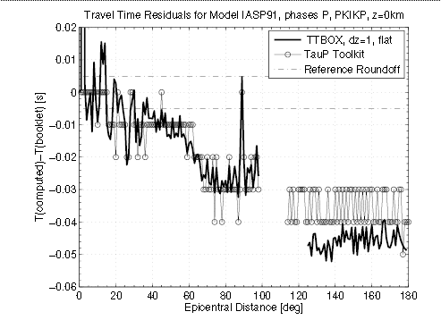
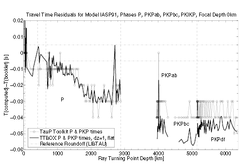

|
| Fig. 3: residuals as function of ray parameter for P, PcP. Since PcP always crosses the whole mantle, a display by turning point depth would be useless. |
Explanations given here are quoted (with slight modifications) from Knapmeyer (2005).
Figures 1 to 3 summarize the residuals between TTBOX and Libtau travel times as described by Knapmeyer (2005), since the text refers to these figures.
|  |
| Fig. 1: residuals as function of epicentral distance for P and PKIKP (=PKPdf) |
|  |
| Fig. 2: residuals as function of ray turning point depth for P, PKPab, PKPbc, PKPdf |
|
|
| Fig. 3: residuals as function of ray parameter for P, PcP. Since PcP always crosses the whole mantle, a display by turning point depth would be useless. |
Crotwell et al. (1999) have observed the same P and PKP travel time residuals as reported above. They assumed that the residuals are due to the flat Earth transformation that is used in Buland's implementation but not in the TauP Toolkit.
An error in the flat Earth transformation could indeed explain the residuals: If the Earth radius used for the transformation in TTBOX is set to about 6371.2 km, the residuals almost vanish. An accidental use of the radius of the volume equivalent sphere of the International Ellipsoid of 1930 (6371.2213 km, e.g. Kahle, 1984) in libtau could therefore explain the residuals. But this is not the solution of the problem, because both TTBOX and libtau use the correct IASP91 radius of 6371 km. The flat Earth transform as an explanation for of the residuals can in general be ruled out by comparison of the three methods used in the different programs: TTBOX and libtau (or, to be precise, the remodl program in Buland's tau package, which is the program that transforms the model into flat Earth) use the flat Earth transformation and TauP Toolkit does not, but TTBOX produces residuals very similar to those of TauP Toolkit and libtau does not.
The same argument holds for many other possible explanations that seek the cause of the residuals in TTBOX or TauP Toolkit. These two programs are based on completely different equations and algorithms but nonetheless produce highly similar results.
| Source | PcP Δ=0° | PKiKP, Δ=0° | PKIKP, Δ=180° |
|---|---|---|---|
| T(analytical) [s] | 511.2641 | 994.5555 | 1212.0711 |
| Δlibtau [ms] | 15.9 | 44.4 | 48.9 |
| ΔTauP [ms] | 5.9 | 14.5 | 8.9 |
| ΔTTBOX [ms] | -0.1 | -0.1 | -0.1 |
The above table shows residuals of several vertical incidence travel times with respect to the analytic solutions derived by Knapmeyer (2005). The residuals of libtau range from 15.9 ms to 48.9 ms, the residual of TauP Toolkit range from 5.9 ms to 14.5 ms, whereas the residuals of TTBOX are -0.1 ms and less. Analytical travel times for PcP at 0° distance and PKIKP at 180° distance are also shown in figures 2 and 3. The comparison of the different implementations with each other together with the comparison of the results with the analytically derived travel times thus clearly points to libtau as the source of the differences between the output of the three computer programs.
The distance dependence of the P residual shown in fig. 1 suggests that something happens to accuracy in the lower mantle, in depths reached by rays that travel to an epicentral distance of 40° or more. Figure 2 shows the residual as function of turning point depth. From fig. 2 it is immediately clear that the extraordinary low residual at 89° corresponds to the upper edge of the D'' zone, which in the IASP91 model begins at 2740km depth and is first touched by P at a distance of 89.6°. The PKIKP residual is almost constant, but the residual for PKPbc is higher than that for PKPab and PKIKP. Accuracy for the lower part of the outer core also seems to be affected. Buland & Chapman (1983) in their analysis of interpolation error do not describe the behavior of error for decreasing sampling density, but as Morozov (2004) points out, a less dense (t, p) sampling results in a travel time delay, i.e. the behavior of libtau for sparse sampling is opposite to that of TTBOX, where less dense sampling always causes a travel time advance.
My explanation for the residuals observed in computed travel times is therefore a too sparse depth sampling in the libtau software.

|
| Fig. 4: depth sampling density as used by libtau library. The distance between two adjacent samples is plotted at the depth of the upper one. |
Figure 4 shows the depth sampling used by libtau. It can be extracted from the remodl program, which is part of the tau package and responsible for the model sampling. The depth sampling is rather uneven since the method of Buland & Chapman (1983) adjusts sampling density to the model structure. More critical parts of the model are sampled denser.
A comparison of figures 2 and 4 shows that the P residual becomes larger than -15ms for rays bottoming in a depth of about 1200 km where sample distance becomes larger than about 35 km for the first time. The residual then increases with sample distance, which reaches a maximum of 89.9 km at about 2300 km depth. The residual of P waves bottoming deeper than 2300 km does not increase any further because sample distance in the deep mantle is 40 km and less. P waves with a turning point in this part of the mantle only collect a travel time delay when they cross the sparsely sampled depth range. Steeper incidence in combination with denser depth sampling is responsible for the slight decrease of residuals for rays turning in the D'' depth range.
The PcP phase crosses the whole mantle at a steep angle, whereas P rays cross the lowermost layers close to their turning points only at shallow angles. A comparison of P and PcP travel times can thus be used to distinguish between travel time residuals produced in shallower or deeper parts of the mantle. For PcP, it does not make much sense to plot the residual as function of deepest point. Figure 3 therefore shows the P and PcP residual as function of ray parameter. As one would expect, the PcP residual for ray parameters close to 4.44 s/deg is similar to that of P, because ray paths are very similar. For decreasing ray parameter, i.e. PcP traveling increasingly steep through the lower mantle, the PcP residual decreases and is minimum for near vertical incidence. This also points to an accuracy problem in the lower mantle, where the P waves with the largest residual spend most of their travel time.
PKPab not only crosses the relative sparsely sampled lower mantle but also the upper half of the outer core, where sampling is also relatively sparse. There are no ray turning points in this part of the core, but all PKP phases collect a travel time contribution there. Depth sampling in the lower half of the outer core is even more sparse than in the upper half, which explains the increased residuals of PKPbc, which bottoms there. PKIKP has steeper incidence angles in the mantle and in the outer core than PKPab and PKPbc. PKIKP crosses all layers nearly vertically in a small ray parameter range. The time delay collected in sparsely sampled layers is therefore almost independent of epicentral distance (fig. 1) or turning point depth (fig. 2).
The above is only a qualitative explanation of observed residuals in terms of libtau depth sampling density. A quantitative analysis would be desirable not only to confirm the hypothesis of a sparse sampling as cause of the residuals, but also to find a way to reduce the residuals. This would require running tests with libtau at different sampling densities. Unfortunately, it turned out to be impossible to force the libtau software into a different depth sampling without making the interpolation unstable or even crashing the program.